Hello, I'm
I am Masih
A Creator of Meaningful Experiences
Outside of design, I enjoy exploring challenges and learning through experiences like mountaineering, wood carving, and teaching. These pursuits have taught me patience, resilience, and empathy, which I bring into my work to craft meaningful and thoughtful designs.
Many Faces of Masih
A Few Snapshots

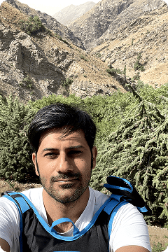
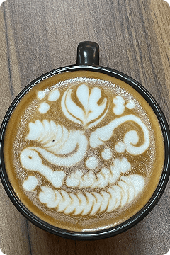
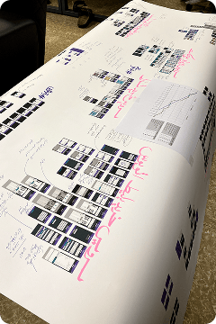
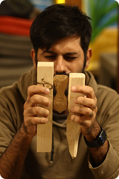
My Design Philosophy
"I design experiences that not only solve problems but create value for both businesses and users. I enjoy digging deep into challenges, analyzing them thoroughly, and coming up with solutions that truly make a difference."
Learning & Growth
Design Books Guiding My Craft
Inspired by the living bookshelves shared by peers like Kyle Johnston, Sawyer Hollenshead, Jason Zook, and Amy McLay Paterson, I keep a curated record of the ideas that shape my practice.
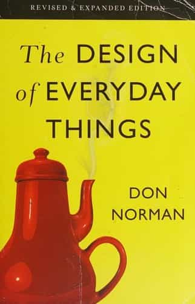
Norman's framework for affordances and feedback helped me build resilience against bias when testing safety-critical flows, especially when we redesigned voice masking for Divar.
- Reinforced my habit of prototyping error states first.
- Influenced my heuristics checklist for accessibility reviews.
- Taught me to narrate "user goals" in every design critique.
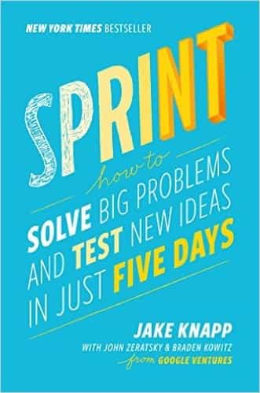
Borrowing the sprint rhythm helped me coach product squads toward decision clarity. We prototyped and launched a loyalty program at Setare Aval using a 4-day variation of this playbook.
- Adopted lightning talks to align stakeholders fast.
- Made "How might we" synthesis a staple in my workshops.
- Improved remote facilitation using structured voting rituals.
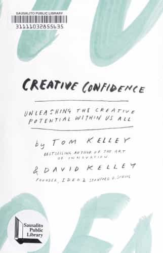
This book reframed how I mentor new designers—shifting critiques from solution judgment to capability building and psychological safety.
- Introduced "confidence mapping" in my mentorship sessions.
- Drove me to design project-based curricula at Rahnema College.
- Encouraged storytelling rituals to celebrate incremental wins.
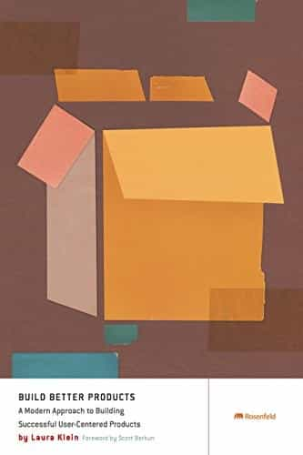
I'm exploring how human-centered methods evolve when models make probabilistic decisions—informing the guardrails I craft for AI-augmented solutions.
- Building an ethical checklist for AI experiments.
- Pairing qualitative interviews with model metrics.
- Documenting prompt design patterns for my team.
People & Places
Moments That Shaped Me

A rooftop gathering with our product design team at Divar—a group of exceptional designers representing some of the finest talent in our country's design community. Together, we formed a 32-person product organization that blended design, research, product, and engineering to create experiences serving millions of users.
"Designing with professionals keeps the work humble, ambitious, and joyful."
Divar Product Experience Team — collaborating across research, product design, and engineering.
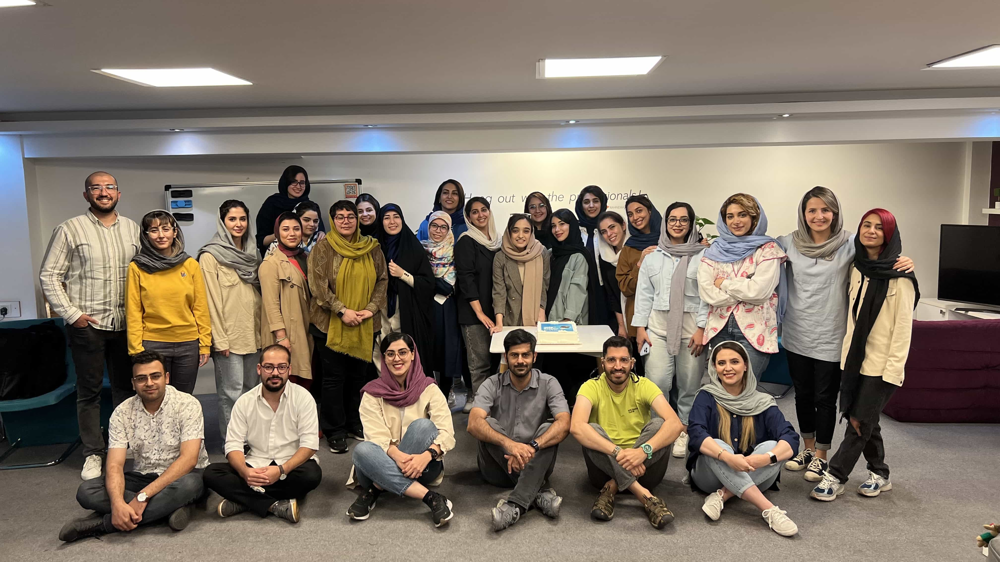
Celebrating the completion of a product design course at Rahnema College in winter 2023. Since then, I've been teaching product design courses seasonally, sharing my experience with the next generation of designers. It's rewarding to see students grow into successful designers who make meaningful contributions to our design community.
"The best way to learn is to teach; the best way to teach is to keep learning."
Celebrating the completion of a product design course at Rahnema College, Winter 2023
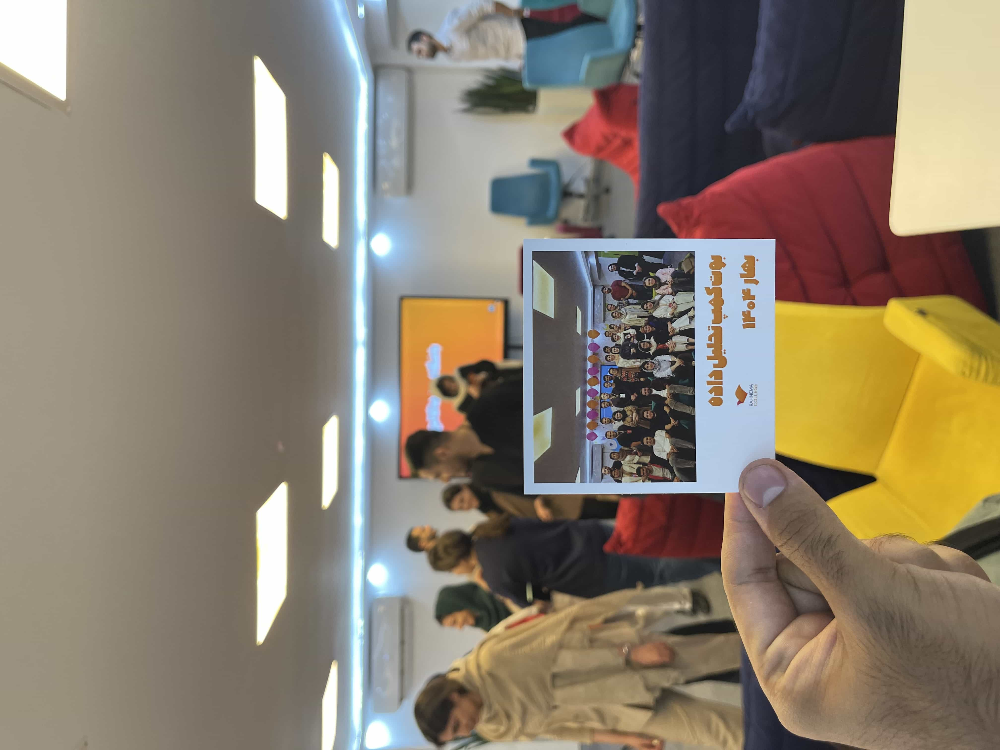
The end of a 170-hour Data Analysis Bootcamp at Rahnema College in Spring 2024. The course covered data preprocessing, business metrics, statistical inference, and A/B testing, giving me tools to bridge design intuition with quantitative insights. This experience transformed my approach to product design, teaching me to validate decisions with data and create evidence-based solutions.
"Great design is the perfect marriage of intuition and data."
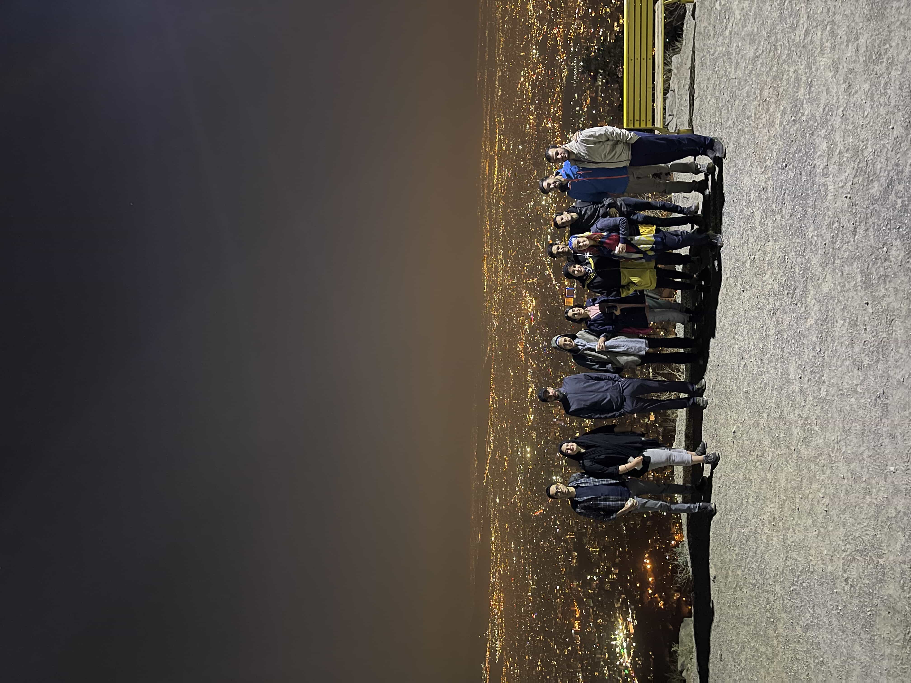
Sunday night mountaineering trips to Tochal Peak in Tehran—what started as a small group of friends has grown into a thriving community of over 500 members who gather weekly for diverse adventures. This reflects my core belief that great experiences emerge when we bring people together around shared passions.
"Great experiences emerge when we bring people together around shared passions."
Nighttime gathering at Tochal Peak with the mountaineering community, October 2022
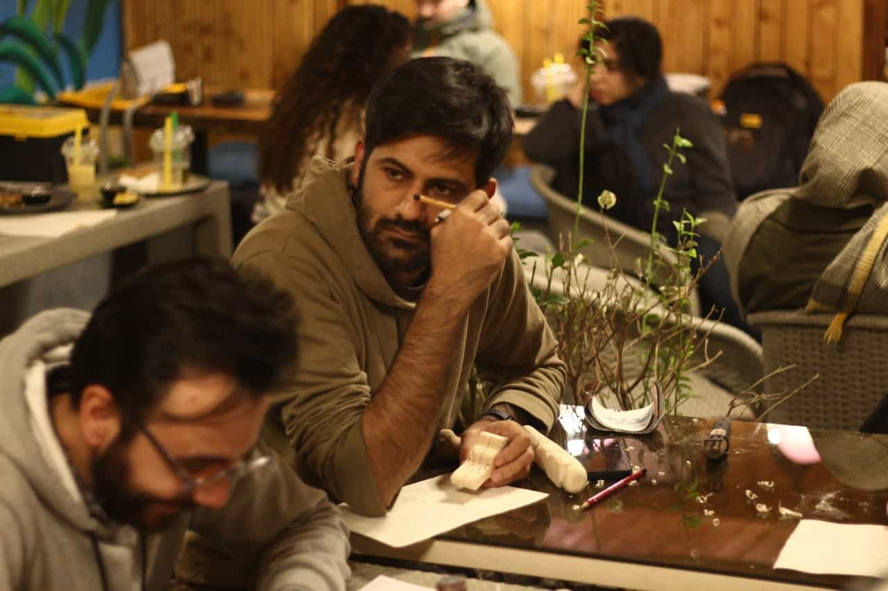
Learning wood carving from a master craftsman, carefully observing his technique to create a wooden bird. Wood carving taught me that great work requires patience, the willingness to learn from masters, and the discipline to refine every detail until it's right. These lessons directly inform my approach to product design.
"The best designs emerge from precision, patience, and the refusal to give up."
Wood carving workshop: learning precision and patience from a master craftsman
Background
Education & Certificates
Let's Connect
Let's Work Together
Curious about my work or just want to say hello? I'd love to hear from you.